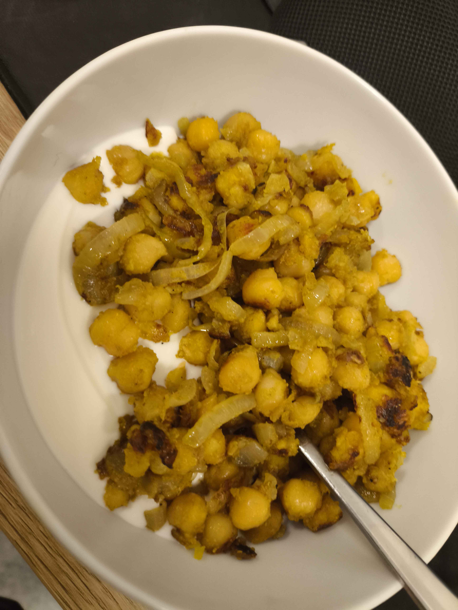

Back to Home
Fast chickpeas

Ingredients
- Can or jar of chickpeas
- Two large onions
- Olive oil
- Salt
- Spices of choice (paprika, garlic powder, cumin, etc.)
- Greek yoghurt or rice
Steps
- Drain and rinse the chickpeas.
- Chop the onions.
- Heat olive oil in a pan over medium heat.
- Add the chopped onions and sauté until they are soft (or until they're caramelized).
- Add the chickpeas to the pan and stir well to combine with the onions.
- Sauté for a few minutes until the chickpeas are cooked through.
- Season with salt and your choice of spices. Stir well to ensure the chickpeas are evenly coated.
- Cook for an additional 5-7 minutes, stirring occasionally, until the chickpeas are desired level of crispy.
- Serve hot with Greek yoghurt or over rice.